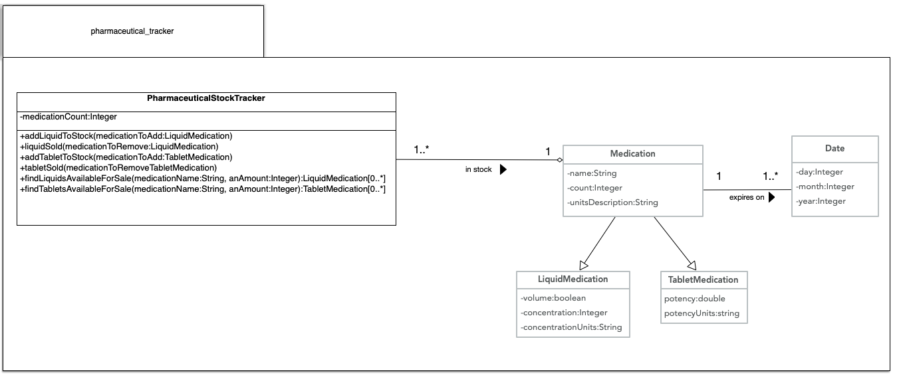

Classes and Inheritance
All computer languages are ways to organize your communication and thinking. In this, they are very similar to spoken languages. Each spoken language, or family of spoken languages, does this organization differently. English sentences often have a structure of Subject-Helper Verb-Verb-Predicate..."The boy will bite the dog," for example. German, a language closely related to English, organizes things differently. Sometimes German sentences have a Subject-Helper Verb-Predicate-Verb structure... "Ich werde das Buch bald lesen," which if translated word-by-word is "I will the book soon read." Spanish has adjectives after the nouns they modify.
While each language has its own organizational rules, they all do the same thing. They allow us to organize and express our thinking.
C++, being a sibling of C, has the concept of functions but when you truly begin thinking in C++, you think in classes and instances of classes. So much so, that, in modern C++, any stand-alone function other than the main function, has 'code smell'.
To help learn about the C++ syntax for classes and instances, a set of class descriptions is needed. The set selected for your perusal describes a very simplified stock-tracker for an imagined pharmaceutical company. Several classes are included in this set. A Date class storing individual numbers for a day, month, and year. A Medication class that is the parent class for two medication types, TabletMedications and LiquidMedications. And last, but not least, a model class (MVC) that stores and manipulates data regarding the stock available for sale. 
Due to C++'s ancestor C, C++ class declarations and definitions are put in seperate files. A declaration describes what properties and functions a class has, but
not what the functions do. An implementation describes what each class function does but does not describe the properties and functions a class has. Many other languages
combine the declaration and definition in one spot. By convention, the declaration files for C++ use the .h or .hpp file extension to the file name.
Also by convention, C++ implementation files use the .cpp extension. Since this is by convention only, you could use any extension you want,
but if you choose to do so, you better have a VERY good reason or you will confuse everyone else who ever reads or supports your code. An example of a declaration
file and an implementation file for a simple data-class is in order.
Everybody who has written C++ for any significant amount of time has an opinion on what the extension for header files should be. Microsoft Visual Studio
uses .h by default, matching the header files used when using the C language. Apple's Xcode uses .hpp to differentiate C++ header files from C header files.
Bjarne Stroustrup weighed in on this controversial topic when it was being discussed by the C++ International Standards Body.
Note!
.h or .hpp?
I have worked on projects that used .h, on projects that used .hpp, and on projects that used .H.
I did not notice the choice of suffix to be among the significant problems or advantages. So, I prefer to spend my efforts
on other things.
Excerpt From: "Default convention for C++ header files should be .hpp"ISO C++, 2016.
In other words, it doesn't matter which you use. Go with the default your IDE uses. It's not even worth the time to change it from your IDE's default. When you get a job, your boss may have an opinion as to which to use. Be obedient and do what you are told then. The bosses that I (the author) had didn't care. Also, this is will be remedied when compilers more fully support C++20. Then header files will not be needed at all. Party!! 🥳
The purpose of the Date class is to store the day, month, and year for any specific date. In a real app, you'd never create this class. Instead you'd use the standard date and time utilities. Be flexible. The purpose of this Date class is to help you learn how to write a simplistic C++ class.
The design of the Date class allows searching by comparing any or all of these three values. If you look at the UML class diagram, it shows the Date class is composed of three integers, one for the day, one for the month, and one for the year. In the code below focus, for now, on the code starting with the keyword class.
#ifndef date_hpp
#define date_hpp
namespace pharmaceutical_tracker {
class Date {
private:
int day;
int month;
int year;
public:
Date();
Date(int a_day, int a_month, int a_year);
void set_day(int aDay);
int get_day()const;
void set_month(int aMonth);
int get_month()const;
void set_year(int aMonth);
int get_year()const;
bool operator==(const Date& other_date)const;
};
}
#endif /* date_hpp */
You'll notice the class keyword is followed directly by the name of the class. Also notice that, in accordance with convention, the first letter of a custom class's name is capitalized. Nothing else in C++ is usually capitalized except a thing called macros that have fallen out of favor.
After the line declaring the class name, you will see four lines of code that declare three private properties. If a C++ class's properties are private, then they cannot be accessed directly. For example, if there was a variable of type Date called birthday, the following code would be invalid and fail to compile.
if(birthday.year < 2020)
Please realize that only things in the public: block can be accessed or changed directly. That's why all private properties must be accessed and changed (mutated) by class functions in the public: block. These are colloquially called "getters and setters". You can recognize them by their names. Take a look at the code for the Date class above and find its getter and setter declarations in the public section. Notice that the first part of the getter declarations start with the same type as the instance variable it is associated with. C++ requires that the type of what is returned from the function be declared directly. The setters have void in this same location meaning nothing is going to be returned. Also notice the parameters for the setters also require a type be declared.
There is a third option, in addition to private and public, known as protected. If an instance variable or class function is protected, it is directly accessible to anything that inherits from the class but not accessible to everything else.No. You are wrong if you try to make this 'never' type of a claim. You should use protected when appropriate. Use it when you don't really need to strongly hide how you've done something.
The last declaration in the date.hpp file for the Date class is the C++ syntax for overloading the == operator. This syntax for operator overloading compares the current instance of Date, the one on the left side of the == operator, with the instance of Date on the right, in this declaration known as other_date. As part of this declaration, you can see another new type modifier, &. This modifier means that the parameter isn't a Date. Instead it is a Date reference. References are similar to pointers in that references allow a class instance to be used within a function without the instance being copied. There are some differences however, and Bjarne Stroustrup states that references were designed specifically for operator overloading to make the overloading syntax clearer. He also gives some rules for when you should use references and when you should use pointers.
One last item before moving on to the class function definitions. Notice the namespace declaration right before the class declaration. In C++, namespaces are used to group classes together and differentiate them from other classes that may be named the same. Think of it this way, let Date be the 'given name' of the class in the date.hpp file. With people, rarely are given names sufficient to differentiate people from each other. They need a family name. You can think of the namespace as being the 'family name' of the class. It helps differentiate this Date class declaration from any other, thus helping the compiler know which type of Date to use if there happens to be more than one. With this namespace declaration in the .hpp file, this Date's name isn't just Date, it's pharmaceutical_tracker::Date with :: connecting the namespace to the class name.
The first thing the compiler needs to know when working with a .cpp file is which class declaration the definitions in the file belong to. This is done by the first line in the example below. The #include "date.hpp" line of code is known as a 'precompiler directive'. It informs the compiler that the declarations in the date.hpp file will be used. Also remember from last week that typing the namespace over and over again can be very tedious. So, once again, the using declaration is used. That way we, having declared the "full name" for all the class functions being defined here, the class function definitions are significantly shorter and easier to read.
The first line of code after the namespace declaration is the definition of the Date constructor declared in the date.hpp file and discussed above. The name of this constructor includes the class, Date, to which it belongs. That's why you see Date::Date() as its name. Directly after the name of the function, you'll notice a colon character (:) followed by a list of the instance variable names for the date class. Each instance variable name is followed by a pair of curly braces ({ and }) and an integer value. The combination of an instance variable name, the curly braces, and a valid value initializes that instance variable with the stated value. In the default constructor for this Date class, the day, month, and year are all set to be -1, an invalid value, so any default instance of Day can be detected and differentiated from those instantiated using the non-default constructor. The items after the colon are known as an initiator list.
#include "date.hpp"
using pharmaceutical_tracker::Date;
Date::Date():day{-1}, month{-1}, year{-1} {}
Date::Date(int aDay, int aMonth, int aYear):day{aDay},month{aMonth},year{aYear} {
//todo: check to make sure day, month, and year are a valid combination for a date
}
void Date::set_day(int aDay) {
//todo: check to make sure is valid day
day = aDay;
}
int Date::get_day()const {
return day;
}
void Date::set_month(int aMonth) {
//todo: check to make sure is valid month
month = aMonth;
}
int Date::get_month()const {
return day;
}
void Date::set_year(int aYear) {
//todo: check to make sure is valid year
year = aYear;
}
int Date::get_year()const {
return year;
}
bool Date::operator ==(const Date& other_date)const {
return day == other_date.day
&& month == other_date.month
&& year == other_date.year;
}
Directly after the default constructor, above, is the non-default constructor. In this example, each instance variable is set using a value via an initialization list. You don't have to assign all properties for an instance of a class, but if it makes sense to do so you should.
Following both constructors, are the getters and setters described earlier. Notice that the return keyword is not required if nothing, void, is to be returned.
Remembering the discussion regarding the reference type modifier above, consider the lines of code that is the definition of the == operator. When you use a reference to an instance of a class, you can access any class function or public properties using the . (dot) operator. "But wait a minute!", you say. "Those properties being access are private!" You are absolutely right. They are private to the CLASS not the instance. This means that since both items being checked are part of the Date class, they can access any of their own public, private, or protected properties. The reasoning behind this was to provide cleaner syntax for overloading operators and other class functions that need to access private and protected members.
One important reason people use for selecting C or C++ as an implementation language for a project is speed. It used to be that you had to make difficult choices as to where to put your code to make it fast but use more RAM. If you not only declared but also defined a class's functions in the header file, the functions would end up 'inline', meaning the class function call would be replaced with the class function's code thus increasing the size of you application. If, on the other hand, you put the function's definition in the .cpp file it would not end up inline, your application would use less RAM and run slower. There were tricks you could use to force the compiler to make you function be inline if you wanted. Thankfully those days of making difficult choices are gone. Today, the compilers for C and C++ are much more sophisticated than they used to be.
Ben Klemens tested the compiler in the Gnu Compiler Collection (gcc) and found it,
"threw every optimization trick it knew at my sample programs, and those optimizations knew ... when to inline functions without my explicitly instructing the compiler."
Excerpt From: "21st Century C: C Tips from the New School (p. 181)"Ben Klemens, O'Reilly Media. Kindle Edition.
This means that, with today's modern compilers, programmers don't have to chose when functions should or shouldn't be 'inlined'. The compiler will make a better choice than the programmer can, given the entirety of the code it is compiling. So put the declaration in the .h or .hpp file and the definition in the .cpp file and let the compiler do a better job of optimization than you can unless otherwise restricted.
So far, this week, you've learned how to write the code that describes the class. You've seen the Date class declaration and the definition of its class functions. This is a lot to take in, so if it's confusing, STOP🛑. Take the time to go over the previous material with a classmate. Talk about it. Discuss it. State what each of you understand and what each of you don't. If you just try to keep going without understanding, it's going to get worse not better. Please listen. Success in using C++ in your follow-on classes requires that you understand these basic, beginner things.
Declarations and definitions are vital...but they are not sufficient. To write object oriented code in any language you need to be able to create an instance of any declared and defined class. The way you do this depends on whether you want to instantiate an instance and get a pointer to it, or if you just want to instantiate an instance. If you want both an instance and a pointer to that instance, you can do it the old fashioned pointer way or the modern pointer way. Remember, if you use the old fashioned way, there has to be somewhere in your code where you delete the variable and set the variable to nullptr. If you use the modern way, that is done for you.
//old fashioned way
//the type of the birthday variable is Date* (date pointer)
auto birthday = new Date(5,12,1999);
//modern way
//the type of the birthday variable is a unique pointer to the birthday instance
unique_ptr<Date> birthday(new Date(5,12,1999));
If you want just an instance, you instantiate it like this.
Date birthday(5, 12, 1999);//the type of the birthday variable is a unique pointer to the birthday instance
Like all object oriented languages, C++ supports Has_A type inheritance. As an example, look at the Medication class below (see the UML class diagram above for an overview). The medication class represents a bottle of medication in the pharmacy. It Has_A instance of Date that represents the expiration date of this bottle of medication. You can see in the medication.h file below that there is a protected class variable called expiration_date. Its type is Date. That's it. That's all you have to do to use Has_A type of inheritance. Also, if needed, you can have instance variables that are arrays of custom types like Dates.
#ifndef medication_hpp
#define medication_hpp
#include <string>
#include "date.hpp"//this line must be here so the compiler knows what a date is.
using std::string;
namespace pharmaceutical_tracker {
class Medication {
protected:
string name;
int count;
Date expiration_date;
string units_description;
public:
Medication();
Medication(string aName, int aCount, string aUnitsDescription, int expirationYear,
int expirationMonth, int expirationDay);
string get_name() const;
void set_name(const string& aName);
int get_count() const;
void set_count(int anAmount);
const Date& get_expiration_date() const;
bool operator==(const Medication& other_medication)const;
};
}
#endif /* medication_hpp */
}
It is also common for there to be some sort of container that holds multiple instances of a class in a Has_A relationship. The PharmaceuticalStockModel class has such a relationship as seen in the earlier UML diagram and this code snippet.
class PharmaceuticalStockModel {
private:
unique_ptr<Medication[]> in_stock_medications;
long medication_count;
long medication_capacity;
public:
/*
* constructor and class function declarations here
*/
}
Since PhamaceuticalStockModel Has_A array of medications, PharmaceuticalStockModel also has to have a counter for the current number of medications and a known value of how many medications the array can hold. If it didn't have these, array overflow errors would happen when the array was filled up and another medication was added. This array overflow type of defect is the most common reason for security breaches in software. That's why medication_count and medication_capacity were added to PharmaceuticalStockModel as an attempt to deal with the problem of a full array.
Is_A inheritance is done differently. The example below is the header file for TabletMedication. It Is_A Medication. It is a subclass of Medication. It is a child of the parent class Medication. It is a child of the parent class Medication. It is a derived class of the Medication base class. These statements all mean the same thing. Because it is a derived class without very much added to the base class, you see very little in the TabletMedication class' header file, just the instance variables and functions required to differentiate tablet type medications from other kinds.
#ifndef tablet_medication_hpp
#define tablet_medication_hpp
#include "medication.hpp"
namespace pharmaceutical_tracker {
class TabletMedication: public Medication {
private:
short dosage;
public:
TabletMedication(string aName, int aCount, short aDosage, string dosageUnits,
int expirationYear, int expirationMonth, int expirationDay);
short get_dosage() const;
void set_dosage(short aDosage);
};
}
#endif /* tablet_medication_hpp */
Notice the use of the public keyword in the TabletMedication class declaration line of code. Here, public means that any of the Medication class' public functions or variables are also publicly accessible when using an instance of TabletMedication. That means the programmer does not need to create additional instance functions for TabletMedication for programmers using the TabletMedication class to use public methods of the Medication class, the essence of the Is_A type of inheritance. There are times, however, when that is what a design calls for. In such cases, protected or private inheritance may be more appropriate and those types of inheritance are Has_A instead of Is_A due to the inheritance hiding.